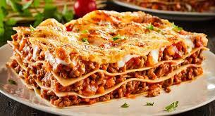

Lasagna Recipe

World's Best Lasagna
When John Chandler submitted this lasagna recipe more than 20 years ago,
he had no idea how successful it would become.
One of our top-performing recipes of all time, World's Best Lasagna racks up
more than 7 million views per year and has ranked among the most popular lasagna recipes
on the internet for two decades. Unfortunately, John unexpectedly passed away at 53 years old.
How to make lasagna
Making lasagna can be time-consuming, but the results are well worth the wait. You'll find a detailed ingredient list and step-by-step
instructions in the recipe below, but let's go over the basics.
Ingredients
- Meet: This super meaty lasagna has sweet Italian sausage and lean ground beef.
- Onion and garlic: An onion and two cloves of garlic are cooked with the meat to add tons of flavor.
- Tomato products: You'll need a can of crushed tomatoes, two cans of tomato sauce, and two cans of tomato paste.
- Sugar: Two tablespoons of white sugar add subtle sweetness and enhance the flavor of the sauce.
- Spices and seasonings: This lasagna recipe is flavored with fresh parsley, dried basil leaves, salt, Italian seasoning, fennel seeds, and black pepper.
- Lasagna noodles: Use store-bought or homemade lasagna noodles.
Steps
- Make the meat sauce.
- Cook the noodles.
- Make the ricotta mixture.
- Layer the lasagna according to the recipe instructions.
- Cover with foil and bake.
- Let the lasagna rest before serving.